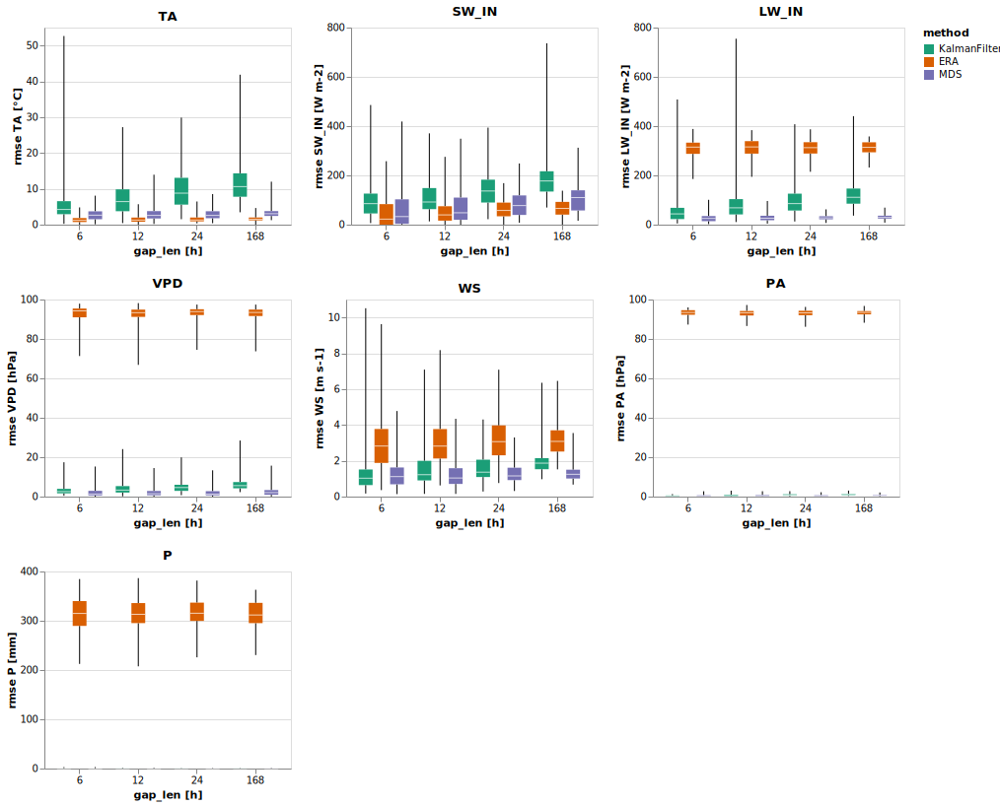
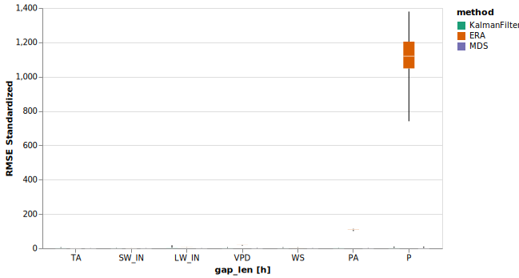
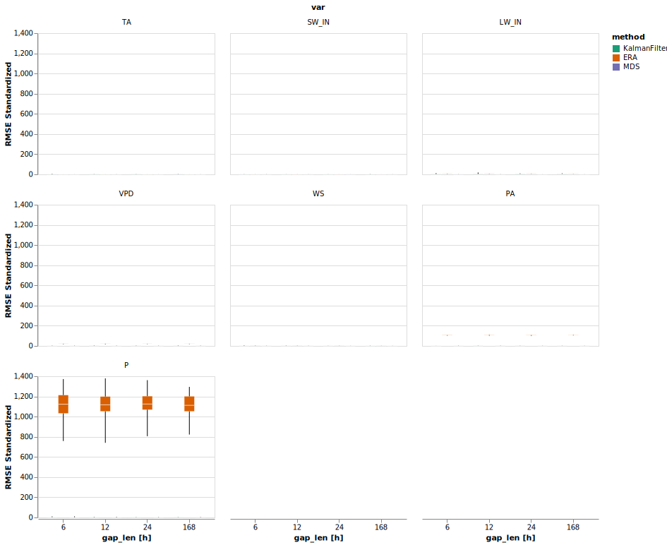
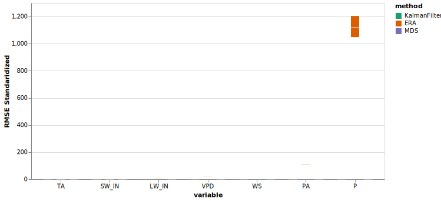

%load_ext autoreload
%autoreload 2Plotting for results
This notebook produces all results plots. It generates some gap in the data, fill with a method (filter, MDS …), compute metrics and then makes all relevant plots
import altair as altfrom meteo_imp.kalman.results import *
from meteo_imp.data import *
from meteo_imp.utils import *
import pandas as pd
import numpy as np
from pyprojroot import here
import torch
import seaborn as sns
from IPython.display import SVGimport vl_convert as vlc
from pyprojroot import here
base_path_img = here("manuscript/Master Thesis - Meteorological time series imputation using Kalman filters - Simone Massaro/images/")
def save_plot(plot, path):
svg_data = vlc.vegalite_to_svg(vl_spec=plot.to_json())
with open(base_path_img / (path + ".svg"), "w") as f:
f.write(svg_data)
def show_plot(path): return SVG(filename=base_path_img / (path + ".svg"))reset_seed()
n_rep =200hai = pd.read_parquet(hai_big_path).reindex(columns=var_type.categories)
hai_era = pd.read_parquet(hai_era_big_path)Comparison Imputation methods
Main plot
The gap is a only in the variable that is gap-filled
@cache_disk("the_results")
def get_the_results():
model_Av = torch.load(here("analysis/results/trained_12feb/1_gap_varying_3-336_v1.pickle"))
comp_Av = ImpComparison(model = model_Av, df = hai, control = hai_era, block_len = 200, time_series=True)
results_Av = comp_Av.compare(gap_len = [12,24, 48, 336], var=list(hai.columns), n_rep=n_rep)
return results_Av
results_Av = get_the_results()p = the_plot(results_Av.drop(columns=['pred', 'targ']))
save_plot(p, "the_plot")
show_plot("the_plot")
len(results_Av)16800from itertools import product
import altair as altalt.data_transformers.disable_max_rows() # it is safe to do so as the plots are rendered using vl-convert and then showed as imagesDataTransformerRegistry.enable('default')p = the_plot_stand(results_Av.drop(columns=['pred', 'targ']))
save_plot(p, "the_plot_stand")
show_plot("the_plot_stand")
p = the_plot_stand2(results_Av.drop(columns=['pred', 'targ']))
save_plot(p, "the_plot_stand")
show_plot("the_plot_stand")
p = the_plot_stand3(results_Av.drop(columns=['pred', 'targ']))
save_plot(p, "the_plot_stand3")
show_plot("the_plot_stand3")
Table
t = the_table(results_Av)
the_table_latex(t, base_path_img / "the_table.tex")
tt = the_table(results_Av, 'rmse_norm')
the_table_latex(t, base_path_img / "the_table_stand.tex")
tTimeseries
p = plot_timeseries(results_Av, idx_rep='random')
save_plot(p, "timeseries")
pTODO: Scatter plot
predicted vs measured for different methods for selected gaps
Kalman Filter analysis
Gap len
@cache_disk("gap_len")
def get_g_len():
model_Av = torch.load(here("analysis/results/trained_4_feb_All_gap_varying_12_v2.pickle"))
return ImpComparison(model_Av, hai, hai_era, block_len=200).compare(gap_len = [3,6,12,24,30,48,96,192], var=list(hai.columns), n_rep=n_rep, raw=True)
gap_len = get_g_len()p = plot_gap_len(gap_len)
save_plot(p, "gap_len")
pControl
base_path = here("analysis/results/trained_8feb")models = pd.DataFrame(columns = ["use_control", "gap_single_var"])::: {.cell 0=‘e’ 1=‘x’ 2=‘p’ 3=‘o’ 4=‘r’ 5=‘t’}
def l_model(x, base_path = base_path): return torch.load(base_path / x):::
@cache_disk("use_control")
def get_control():
models_control = [
{'use_control': True, 'model': l_model("All_gap_varying_30_v1.pickle")},
{'use_control': False, 'model': l_model("All_gap_varying_30_no_control_v1.pickle")},
]
models_control = pd.DataFrame.from_records(models_control)
kcomp_control = KalmanImpComparison(models_control, hai, hai_era, 100)
k_results_control = kcomp_control.compare(n_rep =30, gap_len = [6, 12, 24, 30, 48,96], var = list(hai.columns))
return k_results_controlk_results_control = get_control()k_results_control.gap_len = k_results_control.gap_len/2p = plot_control(k_results_control)
save_plot(p, "use_control")
pGap in Other variables
@cache_disk("multi_gap")
def get_multi_gap():
models_single = [
{'gap_single_var': True, 'model': l_model("All_gap_varying_30_v1.pickle")},
{'gap_single_var': False, 'model': l_model("All_gap_all_30_v1.pickle")},
]
models_single = pd.DataFrame.from_records(models_single)
kcomp_single = KalmanImpComparison(models_single, hai, hai_era, 100)
return kcomp_single.compare(n_rep =n_rep, gap_len = [6, 12, 24, 30], var = list(hai.columns))k_results_single = get_multi_gap()k_results_single.gap_len = k_results_single.gap_len/2base_path_img.ls()p = plot_other_var(k_results_single)
save_plot(p, "gap_other_vars")
pfrom meteo_imp.kalman.results import table_comparetable_compare(k_results_single, 'gap_single_var')Generic vs Specialized
@cache_disk("generic")
def get_generic():
models_generic = [
{'type': 'Generic', 'var': 'TA', 'model': l_model("All_gap_varying_30_v1.pickle")},
{'type': 'Generic', 'var': 'SW_IN', 'model': l_model("All_gap_varying_30_v1.pickle")},
{'type': 'Only one var', 'var': 'TA', 'model': l_model( "TA_30_v1.pickle.pickle")},
{'type': 'Only one var', 'var': 'SW_IN', 'model': l_model("SW_IN_30_v1.pickle")},
]
models_generic = pd.DataFrame.from_records(models_generic)
comp_generic = KalmanImpComparison(models_generic, hai, hai_era, 100)
return comp_generic.compare(n_rep =n_rep, gap_len = [6, 12, 24, 30], var = ['TA', 'SW_IN'])
k_results_generic = get_generic()p = plot_generic(k_results_generic)
save_plot(p, "specialized")
pFine tuned short gaps vs Generic
Fluxnet
import polars as pl
from fastai.vision.data import get_gridCorrelation
import matplotlib.pyplot as pltimport statsmodels.api as smdef auto_corr_df(data, nlags=30):
autocorr = {}
for col in data.columns:
autocorr[col] = sm.tsa.acf(data[col], nlags=nlags)
return pd.DataFrame(autocorr)auto_corr = auto_corr_df(hai).T[[1,3,6,12,24,30]]
auto_corr.columns = auto_corr.columns /2axes = get_grid(2,1,2, figsize=(19,8))
sns.heatmap(hai.corr(), annot=True, vmin=-1, vmax=1, center=0,
cmap=sns.diverging_palette(20, 220, n=200), ax=axes[0], square=True, cbar=False)
sns.heatmap(auto_corr, annot=True, vmin=-1, vmax=1, center=0,
cmap=sns.diverging_palette(20, 220, n=200), square=True, ax=axes[1])
axes[1].set(ylabel="Variable", xlabel="Shift [h]", title="Temporal Autocorrelation")
axes[0].set(xlabel="Variable", ylabel="Variable", title="Correlation");
plt.savefig(base_path_img / "correlation.png")Gap distribution
out_dir = here("../fluxnet/gap_stat")site_info = pl.read_parquet(out_dir / "../site_info.parquet").select([
pl.col("start").cast(pl.Utf8).str.strptime(pl.Datetime, "%Y%m%d%H%M"),
pl.col("end").cast(pl.Utf8).str.strptime(pl.Datetime, "%Y%m%d%H%M"),
pl.col("site").cast(pl.Categorical).sort()
])def duration_n_obs(duration):
"converts a duration into a n of fluxnet observations"
return abs(int(duration.total_seconds() / (30 * 60)))# maybe this code should actually go in 20_gap_finding
files = out_dir.ls()
files.sort() # need to sort to match the site_info
sites = []
for i, path in enumerate(files):
sites.append(pl.scan_parquet(path).with_columns([
pl.lit(site_info[i, "site"]).alias("site"),
pl.lit(duration_n_obs(site_info[i, "start"] - site_info[i, "end"])).alias("total_obs"),
pl.col("TIMESTAMP_END").cast(pl.Utf8).str.strptime(pl.Datetime, "%Y%m%d%H%M").alias("end"),
]).drop("TIMESTAMP_END"))gap_stat = pl.concat(sites).with_column(pl.col("variable").str.replace('_F_QC', ""))gap_stat.head().collect()def plot_var_dist(var, small=False, ax=None):
if ax is None: ax = get_grid(1)[0]
ta_gaps = gap_stat.filter(
(pl.col("variable") == var)
).filter(
pl.col("gap_len") < 200 if small else True
).with_column(pl.col("gap_len") / (24 *2 * 7)).collect().to_pandas().hist("gap_len", bins=50, ax=ax)
ax.set_title(f"{var} - { 'gaps < 200' if small else 'all gaps'}")
if not small: ax.set_yscale('log')
ax.set_xlabel("gap length (weeks)")
ax.set_ylabel(f"{'Log' if not small else ''} n gaps")
# plt.xscale('log') plot_var_dist('TA')for ax, var in zip(get_grid(7,3,3, figsize=(15,12), sharey=False), list(var_type.categories)):
plot_var_dist(var, ax=ax)
# plt.savefig(here("analysis/presentations/plots_18_jan/gap_len_dist.png", warn=False))def plot_var_dist_small(var, ax=None):
if ax is None: ax = get_grid(1)[0]
color = dict(zip(scale_meteo.domain, scale_meteo.range))[var]
ta_gaps = gap_stat.filter(
(pl.col("variable") == var)
).filter(
pl.col("gap_len") < (24 * 2 *7)
).with_column(pl.col("gap_len") / 2).collect().to_pandas().hist("gap_len", bins=50, ax=ax, edgecolor="white", color=color)
ax.set_title(f"{var} - gap len < 1 week")
ax.set_xlabel("gap length (hour)")
ax.set_ylabel(f"Log n gaps")
ax.set_yscale('log') for ax, var in zip(get_grid(7,3,3, figsize=(15,12), sharey=False), list(var_type.categories)):
plot_var_dist_small(var, ax=ax)
plt.savefig(base_path_img / "gap_len_dist_small.png")for ax, var in zip(get_grid(7,3,3, figsize=(15,12), sharey=True), list(var_type.categories)):
plot_var_dist_small(var, ax=ax)
# plt.savefig(base_path / "gap_len_dist_small.png")